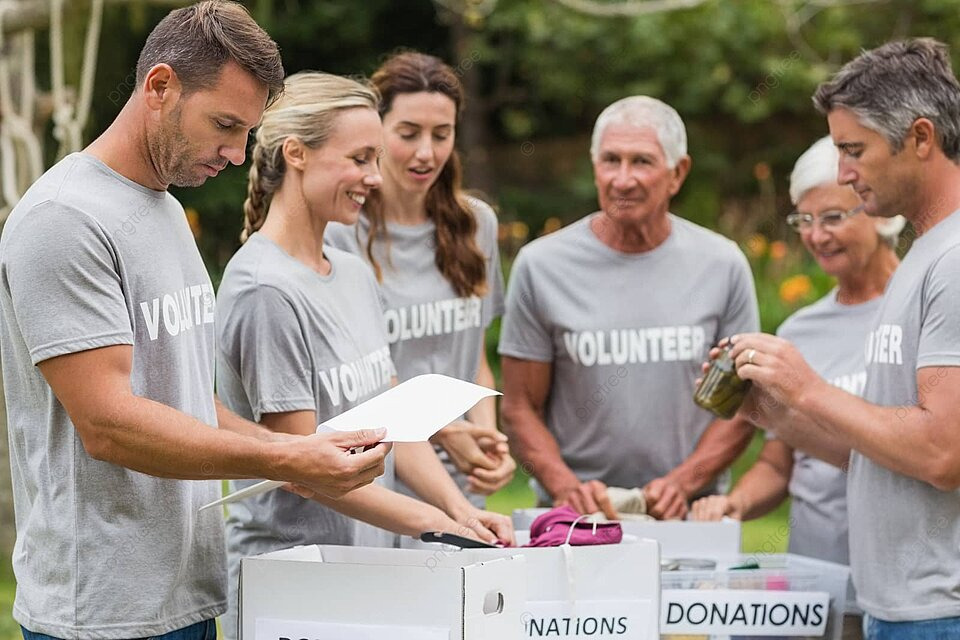

Unity Aid
Foundation
О фонде
благотворительный фонд,создан для
оказания помощи детям с
заболеваниями,которые способны победить
мы хотим побудить людей принать
участие в судьбе каждого ребенка
Мы только начинаем наш путь в
волонтёрстве и обещаем сделать все
что в наших силах и помочь всем
детям,бабушкам,дедушкам и тем кому
требуется помощь,призывем вас стать волонтерами
нашей компании и
изменить мир к лучшему вместе